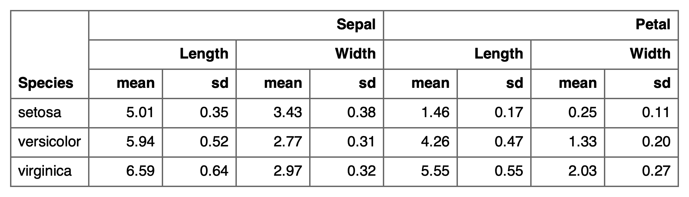

If your variable names contain multiple delimited labels, they will be separated and placed in their own rows.
separate_header(
x,
opts = c("span-top", "center-hspan", "bottom-vspan", "default-theme"),
split = "[_\\.]",
fixed = FALSE
)a flextable object
optional treatments to apply to the resulting header part as a character vector with multiple supported values.
The supported values are:
"span-top": span empty cells with the first non empty cell, this operation is made column by column.
"center-hspan": center the cells that are horizontally spanned.
"bottom-vspan": bottom align the cells treated when "span-top" is applied.
"default-theme": apply to the new header part
the theme set in set_flextable_defaults(theme_fun = ...).
a regular expression (unless fixed = TRUE)
to use for splitting.
logical. If TRUE match split exactly,
otherwise use regular expressions.

Other functions to add rows in a flextable:
add_body_row(),
add_body(),
add_footer_lines(),
add_footer_row(),
add_footer(),
add_header_row(),
add_header(),
set_header_footer_df,
set_header_labels()
library(flextable)
x <- data.frame(
Species = as.factor(c("setosa", "versicolor", "virginica")),
Sepal.Length_mean = c(5.006, 5.936, 6.588),
Sepal.Length_sd = c(0.35249, 0.51617, 0.63588),
Sepal.Width_mean = c(3.428, 2.77, 2.974),
Sepal.Width_sd = c(0.37906, 0.3138, 0.3225),
Petal.Length_mean = c(1.462, 4.26, 5.552),
Petal.Length_sd = c(0.17366, 0.46991, 0.55189),
Petal.Width_mean = c(0.246, 1.326, 2.026),
Petal.Width_sd = c(0.10539, 0.19775, 0.27465)
)
ft_1 <- flextable(x)
ft_1 <- colformat_double(ft_1, digits = 2)
ft_1 <- theme_box(ft_1)
ft_1 <- separate_header(
x = ft_1,
opts = c("span-top", "bottom-vspan")
)
ft_1
#> a flextable object.
#> col_keys: `Species`, `Sepal.Length_mean`, `Sepal.Length_sd`, `Sepal.Width_mean`, `Sepal.Width_sd`, `Petal.Length_mean`, `Petal.Length_sd`, `Petal.Width_mean`, `Petal.Width_sd`
#> header has 3 row(s)
#> body has 3 row(s)
#> original dataset sample:
#> Species Sepal.Length_mean Sepal.Length_sd Sepal.Width_mean Sepal.Width_sd
#> 1 setosa 5.006 0.35249 3.428 0.37906
#> 2 versicolor 5.936 0.51617 2.770 0.31380
#> 3 virginica 6.588 0.63588 2.974 0.32250
#> Petal.Length_mean Petal.Length_sd Petal.Width_mean Petal.Width_sd
#> 1 1.462 0.17366 0.246 0.10539
#> 2 4.260 0.46991 1.326 0.19775
#> 3 5.552 0.55189 2.026 0.27465